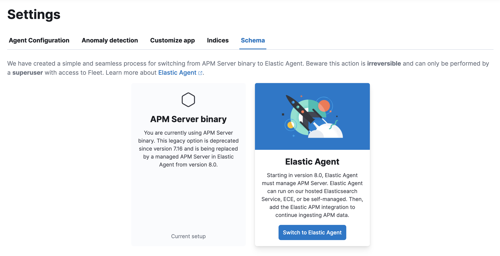
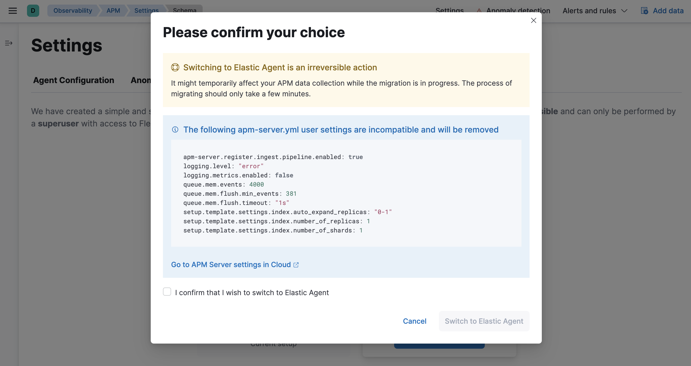

Switch an Elastic Cloud cluster to the APM integrationedit
Upgrade the Elastic Stackedit
Use the Elastic Cloud console to upgrade the Elastic Stack to version 8.14.3. See the Elasticsearch Service upgrade guide for details.
Switch to Elastic Agentedit
APM data collection will be interrupted while the migration is in progress. The process of migrating should only take a few minutes.
With a Superuser account, complete the following steps:
-
In Kibana, navigate to Observability > APM > Settings > Schema.
 -
Click Switch to Elastic Agent. Make a note of the
apm-server.ymluser settings that are incompatible with Elastic Agent. Check the confirmation box and click Switch to Elastic Agent.
Elastic Cloud will now create a Fleet Server instance to contain the new APM integration, and then will shut down the old APM server instance. Within minutes your data should begin appearing in the APM app again.
Configure the APM integrationedit
You can now update settings that were removed during the upgrade. See Configure for a reference of all available settings.
In Kibana, navigate to Management > Fleet. Select the Elastic Cloud Agent Policy. Next to the Elastic APM integration, select Actions > Edit integration.
Scale APM and Fleetedit
Certain Elasticsearch output configuration options are not available with the APM integration. To ensure data is not lost, you can scale APM and Fleet up and out. APM’s capacity to process events increases with the instance memory size.
Go to the Elastic Cloud console, select your deployment and click Edit. Here you can edit the number and size of each availability zone.
Congratulations -- you now have the latest and greatest in Elastic APM!